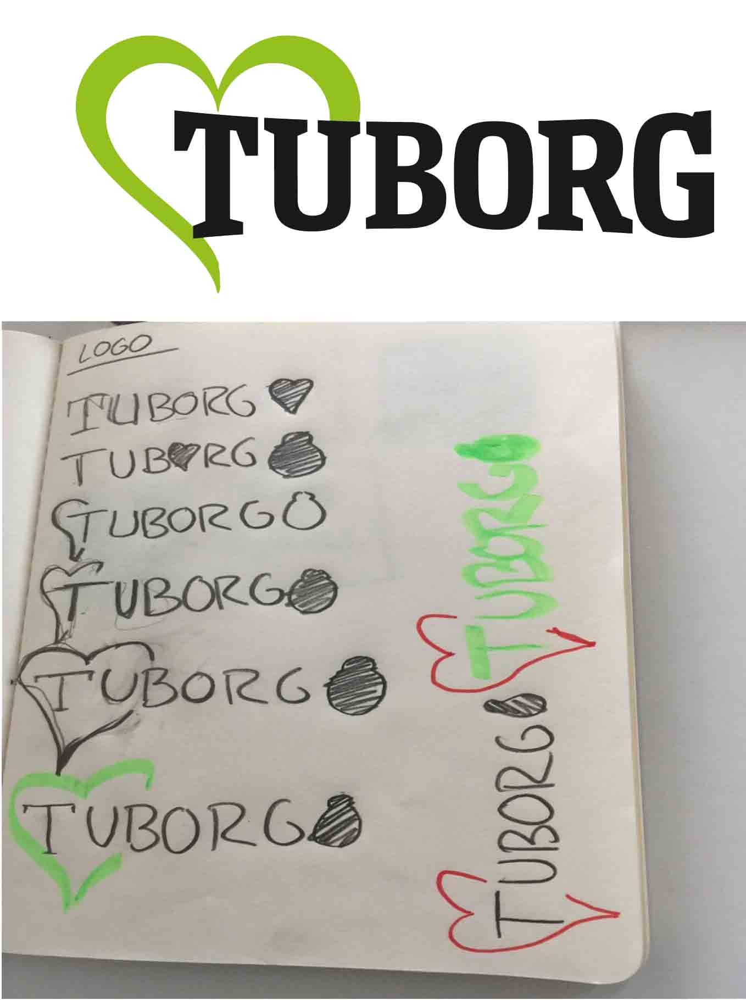
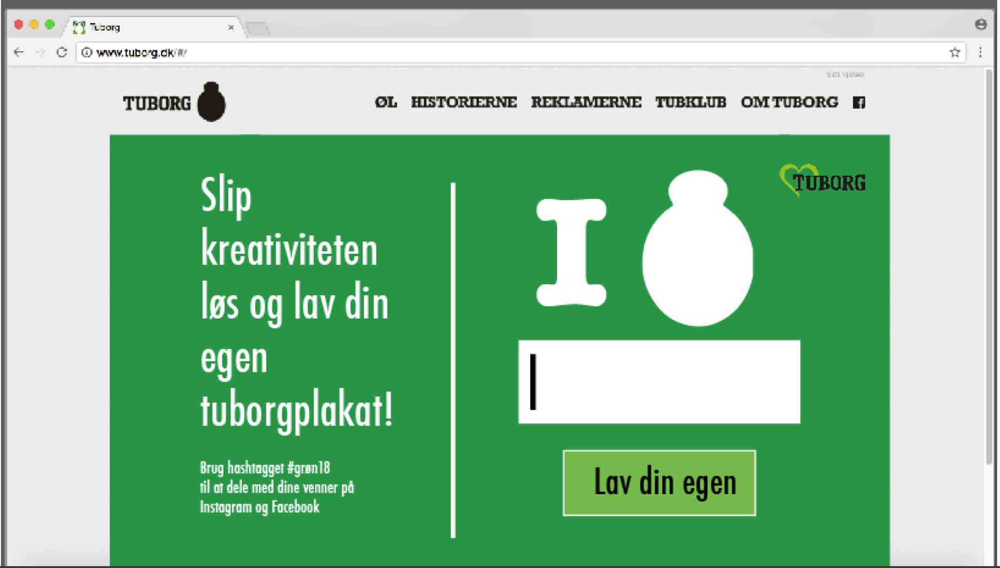
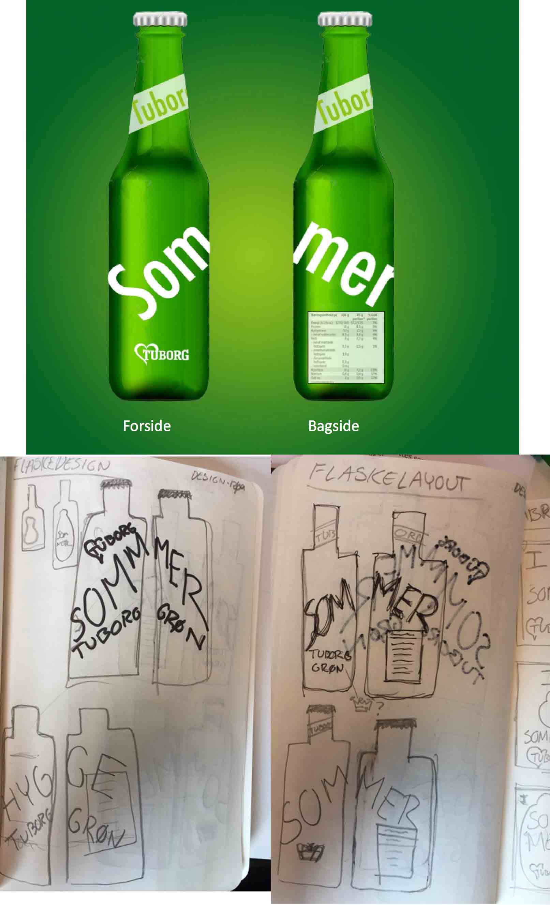
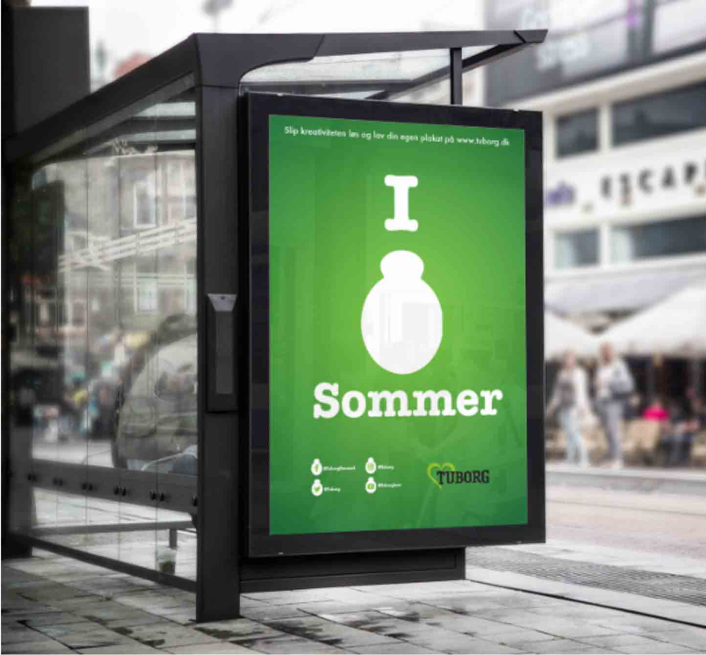

Grunden til, jeg vælger at fremhæve denne opgave, er, at jeg vil mene, det er den mest gennemarbejdede opgave, jeg har lavet i forbindelse med undervisningen. Vi kom igennem næsten alle designprocesser og havde på ingen tidspunkter de helt store problemer. Vi var så optaget af opgaven, at vi sprang over alle pauserne for at nå at blive færdig med vores produkt, inden vi skulle aflevere.
 Vi forstiller os, at kunden ville interagere med hjemmesiden ved at lave deres egen plakat. Ved at trykke på "lav din egen" er tanken, at man kommer ind i en generator, hvor kunden skal kunne lave deres egen plakat med deres egene ord, som de vil beskrive deres 2018 sommer med. Vi tænkte meget hurtigt, at vi ville følge det tema, vi allerede var begyndt på, ved at lave et design hvor vi bruger forskellige ord, som beskriver sommer for folk, og samtidig holder det simpelt.
 Vores færdige abribus. Vi valgte at centrere det vigtigste af plakaten, så det skaber en symmetri. Udover det har vi både skrevet en lille tekst i toppen, som skulle give folk lyst til at gå ind på Tuborgs hjemmeside. I bunden har vi placeret alle deres sociale platforme og vores nye reviderede udgave af deres logo for sommeren 2018.